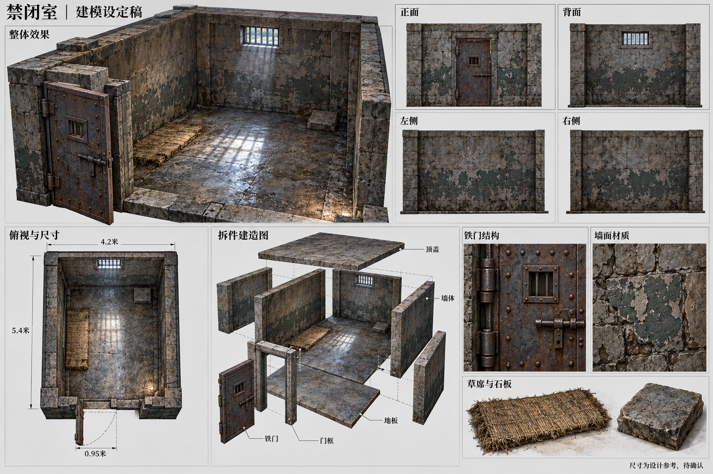

新增图片：已生成 77 / 77，待生成 0，失败 0；已有图片复用 8 份。覆盖十九处场景和 41 类游戏物品，并拆分不同用途的变体与十类商品。
按当前游戏流程优先制作前期准备。默认展示前期新增内容；可切换阶段、类型或显示已有参考。所有图片均待审核，未提交新的三维模型，也未接入游戏。
设定板是视觉与结构参考，正式建模前仍需校核视角一致性、尺寸、活动部件、碰撞与路线。标注布局单位不等于米制施工尺寸。
